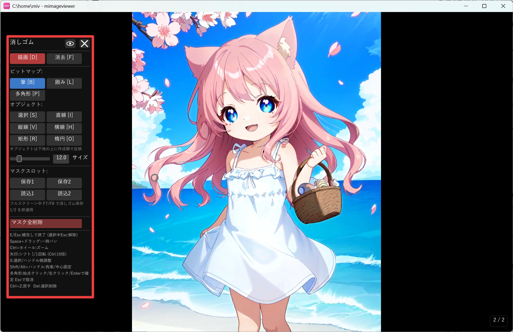
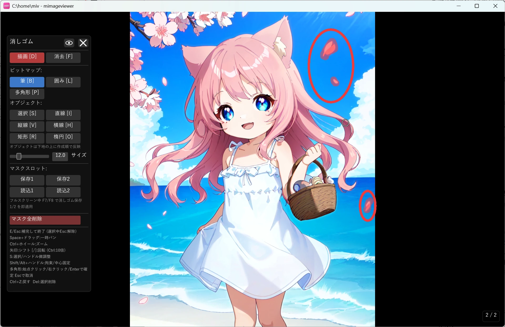
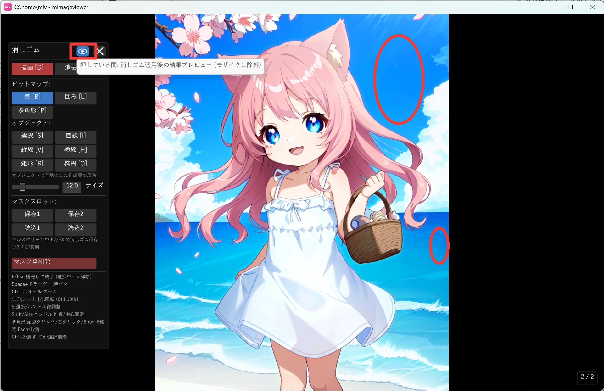

消しゴムで不要物を自然に消す
スキャン画像に写り込んだ汚れやノイズ線、写真の隅に入り込んだ不要物を、塗って囲むだけで消せます。 塗った部分は AI が周囲の絵柄から自然に補完するので、細かくレタッチする必要はありません。 元の画像ファイルは変更されないので、気軽に試して後から取り消せます。
消しゴムモードを開く
フルスクリーン表示中に画像補正パネルの消しゴムアイコンを押すと消しゴムモードに入り、左上にツールパネルが表示されます （E キーでも開始できます）。 モード中は矢印ナビや回転などの通常のフルスクリーン操作は無効になり、マスク編集専用のキーだけが働くので、誤操作の心配なく作業に集中できます。

ツールを選んで塗る
消したい範囲の形に合わせてツールを使い分けます。筆・囲み・多角形は共通のマスクへ直接描き、 直線・縦線・横線・矩形・楕円は後から位置や太さを調整できる形として重ねます。
| ツール | キー | 使いどころ |
|---|---|---|
| 筆 | B | 円形ブラシで自由に塗る（汚れ・シミなど不定形の範囲） |
| 囲み | L | ドラッグで囲んだ内側をまとめて塗りつぶす（広い範囲・複雑な輪郭） |
| 多角形 | P | 頂点を順にクリックして囲む（直線的な輪郭の範囲）。右クリック / Enter で確定、Esc で取消 |
| 直線 | I | 始点と終点を結ぶ太い直線（斜めのスキャンノイズ線など） |
| 縦線 / 横線 | V / H | 画像の端から端まで一直線に塗りつぶす（綴じ跡・縦横のスキャンノイズ） |
| 矩形 / 楕円 | R / O | 整った形の不要物（スタンプ、ロゴ、丸いシミなど） |

パネル上部の「描画」「消去」ボタン（D / F キー）で、マスクを追加するか塗りすぎた部分を消すかを切り替えられます。 直線・縦線・横線・矩形・楕円で作った図形は、作成後も S キー（選択ツール）でクリックして選び直し、 ハンドルドラッグで位置・端点・線幅・サイズ・回転を調整できます。
プレビューで仕上がりを確かめる
確定する前に、パネル右上の 目のアイコン（プレビュー） を使うのがおすすめです。 このボタンは 押している間だけ、いま塗ったマスクを AI で補完した結果を表示します。 指を離すとマスク編集の表示に戻るので、「本当にきれいに消えるか」をその場で見比べながら、 塗り足しや消しすぎの修正を追い込めます。

AI 補完を実行して終了する
仕上がりに納得したら、パネル右上の × ボタンで確定します（E または Esc キーでも確定できます）。 AI がマスク部分を周囲の絵柄から自然に補完し、消しゴムモードを終了します（フルスクリーン表示自体は続きます）。 補完後は画像の左下に「消去補完済み」というステータスが表示されます。
同じ汚れを複数ページに繰り返し適用する
スキャンした本などで、偶数ページ全体・奇数ページ全体に同じ位置の汚れが出ることがあります。 消しゴムパネルの「マスクスロット」欄で現在のマスクを保存しておけば、他のページで呼び出して貼り付けられます。 さらにフルスクリーン表示中（消しゴムモードに入っていない状態）に F7 / F8 キーを押すと、 保存 1 / 2 のマスクを現在のページへ即座に適用して AI 補完まで実行できるので、ページをめくりながらテンポよく処理できます。